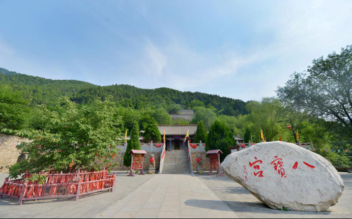
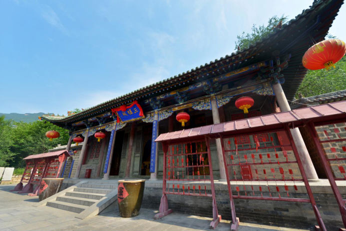
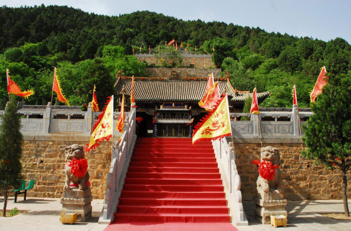
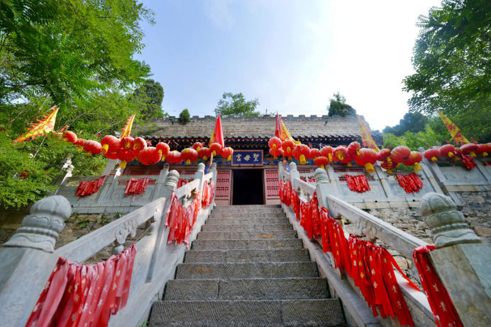

八宝宫
八宝宫，始建于清初，是儒、道、佛三教合一的殿堂。由华山派二十三世和龙门派二十四世合资所建 ，因建时五龙宫向八宝宫分配八个元宝，遂得名“八宝宫”。又因其地处五龙宫北面，晚于五龙宫而建， 亦俗称“后宫”。八宝宫创建者道士高本质，乃全真教华山派第十五代传人，清初到此传道建宫，至民 国传仁、义、礼、智、信、嘉、祥、宗八代。八宝宫宫观为五层叠地式建筑，第一层中间为三祖殿， 、救苦天尊殿，第二层为圣母殿，第三层为祖师殿，第四层为玉皇殿，第五层为三清殿。
走近八宝宫，首先映入眼帘的是八宝宫门口的一块碑和一座碑楼。碑楼始建于民国年间，是为华山派 二十三世法号为永亮子的王真人所立。碑楼四面立柱上悬挂有清末举人焦卓然书写的对联，焦卓然山 西新绛人，因学识渊博，文笔隽秀而称著一方。抗日战争期间，焦卓然在八宝宫内国民小学任教，看到 日寇对中华大地的蹂躏而促其爱国热情高涨。教学同时，为宣传抗日救国主张，解决流亡青年没有书本 的问题，他亲自撰写了一部爱国主义教材《中华国难教育读本》，此读本激励并影响了数计有志青年， 在当时产生强烈凡响。焦卓然的得意门生甚多，著名书法家姚奠中先生，就是他的学生。焦先生的儿女， 更是在其父耳濡目染、学教陶冶下成为共产党的精英。
走近八宝宫，首先映入眼帘的是八宝宫门口的一块碑和一座碑楼。碑楼始建于民国年间，是为华山派二十 三世法号为永亮子的王真人所立。碑楼四面立柱上悬挂有清末举人焦卓然书写的对联，焦卓然山西新绛人， 因学识渊博，文笔隽秀而称著一方。抗日战争期间，焦卓然在八宝宫内国民小学任教，看到日寇对中华大地 的蹂躏而促其爱国热情高涨。教学同时，为宣传抗日救国主张，解决流亡青年没有书本的问题，他亲自撰写 了一部爱国主义教材《中华国难教育读本》，此读本激励并影响了数计有志青年，在当时产生强烈凡响。 ，著名书法家姚奠中先生，就是他的学生。焦先生的儿女，更是在其父耳濡目染、学教陶冶下成为共产党的精英。
1938年，八宝宫被日寇纵火烧毁，直至1998年，云丘山旅游风景区董事长张连水先生投资对八宝宫进行修复，才形成如今的规模。
徐步入内，则见八宝宫门口两座石狮子，高约2米，于清朝乾隆年间雕刻。石狮多以一对，一雌一雄，雄的脚下踏着一只绣球 ，雌的脚下踏着一只小狮子。俗话说：摸摸狮子头好事不断头，摸摸狮子背好活一辈辈，摸摸狮子嘴夫妻不吵嘴。进入八宝宫， 乃其正殿------三祖殿。三祖殿是一座歇山顶的建筑，匾额由山西省著名书法家姚奠中先生亲笔书写。三祖殿内供奉着老子 孔子和释迦牟尼，分别为道教、儒教，佛教创始人。此三大教是中国传统文化的主体，道教和儒教为中国本土教，佛教则是外 来教，源于印度。而明代“三教合一”的出现，说明了三教间关系已具内质的演变，也是社会主流意识和宗教需求的必然结果。 ，全真道教创始人王重阳及全真教龙门派创始人丘处机等几代道士等做出了巨大贡献。 ，就是源于创教人丘处机，因此宗教文化传承中，云丘山在三教合一上，有着深远的历史意义。
步入三祖殿内，呈现在眼前的是三尊庄重高大的神像。中间一位是道教创始人——老子。相传他是太上老君的第十五世硬化身， 太上老君共有九九八十一世硬化身，第十五世尤为最著名。老子，乃春秋战国时期思想家、道德家、哲学家，其代表作《道德经》 ，共九九八十一篇，分为上下两篇，上篇为道篇，下篇为德篇。厚德载物、上善若水等都出自《道德经》。
左侧是儒教创始人孔子，子姓，孔氏，名丘，字仲尼，生于春秋时期鲁国，是中国历史上对后世影响最深的思想家、教育家，编纂春秋， 。其弟子将他的言行语录记录下来著成《论语》。三人行，必有我师焉。温故而知新，可以为师矣。知之为知之，不知为不知，是知也。 等等，都出自《论语》。
右侧是佛教创始人释迦牟尼，原名乔达摩~悉达多，原是迦毗罗卫国王子，即现尼泊尔境内。佛经有言，释迦牟尼刚生下时就 会讲话、走路，身上光芒四射，他向东南西北各走了七步，每走一步脚下都会生出一朵莲花，然后又站在中央手指天道：“我 为悟道而生，并解救众生。”七天之后，他的母亲去世，由姨母养大。 释迦牟尼29岁离开皇宫，在东南西三个方向分别遇到 生老病死，觉得人生很痛苦，后途经北门遇一个沙门，沙门告之，“修行悟道可以脱离人生的痛苦，可以解救众生”。 ，在一棵菩提树下修炼成佛，创建了佛教。
药王庙位于三祖殿右侧，内供奉三位神医。中间一位孙思邈，唐代人，左手拿拐杖 ，右手拿书卷，所著《千斤方》和《 千斤翌方》是现在儿科和妇产科的前身。左一位是华佗，手拿阳金花，其为麻沸散主要成分，即如今的麻醉剂。 ，生于东汉，著有《伤寒杂病论》。此三位对医学界做出了突出的贡献。
救苦天尊殿位于三祖殿左侧，内供奉救苦天尊，即哪吒之师傅太乙真人，两名童子伴于身侧。身坐九头青狮，脚踏莲花， 手拿玉盂。传说中的他千处有求千处应，如观音大士大慈大悲，普救众生，当人们遇到困难，只要呼喊他的名号 ，救苦天尊会派他的童子前来解救，这也是封为“寻生救苦天尊”的缘由。
圣母宫，循三祖殿左侧而上第二层即是，俗称“娘娘庙”，民间数量最多的庙宇之一。内供奉后土娘娘、碧霞元君、顺天圣母。后土娘娘于中间， 主宰着大地山川，俗称“地母”， ‘皇天在上，后土在下’中的后土即指这位后土娘娘。左侧碧霞元君，亦称“泰山娘娘”，东岳大帝之女儿 ，在华北一带最受崇拜也源于此，百姓称其为“送子娘娘”。后边一位为顺天圣母，古代助产之神，如现今妇产科大夫。顺天圣母供奉 于此，即为祈求产妇得到神灵保佑，在生产时能够顺利，母子平安。在三尊主神像的两侧各站立两位侍女，后土娘娘位份最高， ，即为神女的装束，送子娘娘与顺天圣母两人的位份低于后土娘娘，遂其侍女为宫女装，于此，仙界等级可见一斑。
圣母宫是方圆几百里的人们祈求子嗣的灵验殿堂，院内有碑为证。婚后不育的妇女，夫妇二人相随到娘娘庙里上香下跪，告诉神灵，夫妇二人是哪里人， 姓甚，名谁，想求的是男娃还是女娃，请求娘娘恩准。许过愿，燃黄表、磕头，作过揖，在功德箱里添捐银钱。布施完毕，女人闭眼去摸取布娃娃揣进怀里 出观后，路上遇人，不能说话。到家后关门上炕，象征性地行过房后，取出布娃娃放在被褥下。这时候，吃了饺子才能开口说话。求子的妇女怀孕生子后， 家人带着供品和布娃娃，到求子殿还愿。这就是“八宝宫求娘娘，早生贵子”。在这里可以实现大家的求子愿。
女娲峰，由八宝宫出至到停车场，则见南面山岭，即为传说中人类的母亲——女娲。她仰面朝天，头后方是瀑布般飘柔的长发，五官清晰可见，身姿曼妙， 与整个山岭浑然契合如同那仰面观天的睡美人，即名曰“女娲峰”。讶然于大自然神奇，伏羲和女娲都出现在这神圣的云丘山，共同渲染了云丘山悠久的 历史文化。
   